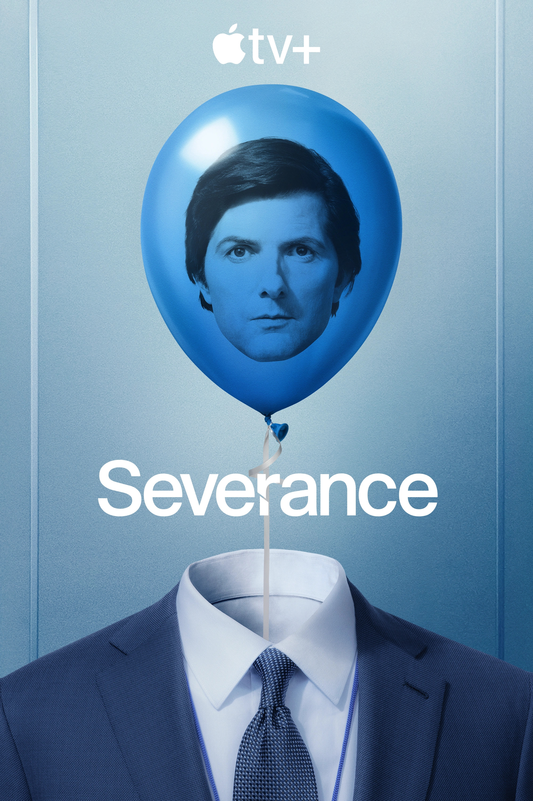

REVIEWS
INSPIRATION AT YOUR FINGER TIPS
Pinterest ~
Reviewed by Jake Wiseman 3-1-2026
My favorite website is pinterest. It's a website where you can get inspiration in the form of photos, posters, graphics, doodles, paintings, and many more! Whenever I'm feeling uninspired, or uncreative I love to scroll to see what works other people have done. Pinterest also lets you "pin" your favorite works to your profile, so you can always go back to what you like.
WHO'S INSIDE YOUR HEAD
Severance ~
Reviewed by Jake Wiseman 3-1-2026
One of my favorite shows is Apple TV's Severance. It's a cool psychological thriller that has some amazing reveals and twists. The show is well shot and amazingly acted. The intro to the show is super uncanny paired with an iconic intro song. 10/10 would recommend for anyone looking for a great thriller!

My Other 5 Favorite Websites Are:
| Website | Rating |
|---|---|
| Stripe | 10/10 |
| GSAP | 11/10 |
| Awwwards | 9/10 |
| Amazon | 8/10 |
| YouTube | 10/10 |